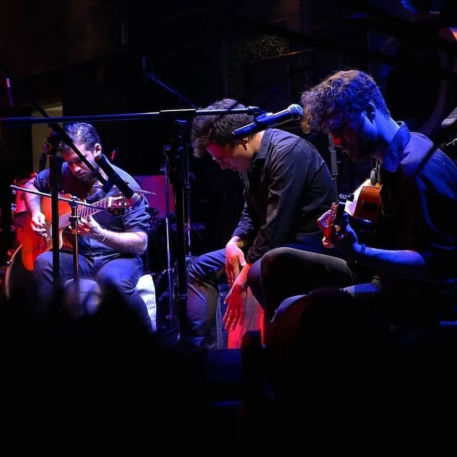

Cantautor · Compositor · Guitarrista · Productor
Marcel Franco
Sobre mí
Donde la música comienza
Escribo desde lo humano. Desde el deseo y la pérdida, desde el amor y la contradicción. Desde las heridas, las paradojas y aquello que nos crea.
Busco el instante en que una melodía deja de pertenecer a quien la escribió y comienza a vivir en quien la escucha.
Mi música nace donde lo íntimo se encuentra con lo colectivo.
Donde una canción puede hablar de nosotros mientras habla de mí.
La guitarra: una forma de pensar.
La voz: una forma de confesar.
La composición: una constancia de que estuve aquí.
El arte no existe para explicar el mundo, sino para experimentarlo de otra manera.

Trayectoria
Dos décadas
Instituto Nacional de Bellas Artes
Ver en YouTube
Primer proyectoEl Cuarto de Dante
Ver en YouTube 2020Limbo
Primer álbum. Una etapa introspectiva y de exploración emocional.
Escuchar el álbum Sencillo
Sencillo
Amanecer
Ver el video Hoy
Hoy
Enseñar
Ver las clases Ya disponible
Ya disponible
Un viaje por la luz
Su primer libro: poemas y textos de forma poética.
Comprar el libroMúsica
Amanecer
Primer sencillo como solista. Escúchalo aquí o en tu plataforma preferida.
Todo el catálogo, incluido el trabajo con El Cuarto de Dante, está disponible en las plataformas.
Galería
Mi recorrido en algunas fotos
Elige por dónde entrar. Dentro puedes recorrer el carrete completo.
Producción musical
Composición por encargo.
Una canción hecha para ti, grabada y producida. Cuéntame la idea y elige hasta dónde quieres llevarla.
$1,500 MXN
- Sesión acústica con voz y guitarra
$2,200 MXN
- Full band: guitarra, bajo, voz y percusión
$3,000 MXN
- Full band
- Post-producción y masterización
Qué necesito de ti
- Una referencia de letra, o la letra completa
- Una canción de referencia, para orientar el estilo
Qué recibes
- MP3
- AIFF y WAV sin compresión
Clases de guitarra
Aprende con alguien que lleva veinte años tocando.
Clases individuales para nivel principiante e intermedio, lunes y martes de 10:00 a 15:00. Se aceptan menores de edad bajo responsabilidad de sus padres.
$1,000 MXN / mes
- 4 clases de 1 hora, una por semana
- Horario fijo entre lunes y martes, de 10:00 a 15:00
- Desde donde estés
- Principiante e intermedio
$3,200 MXN / mes
- 4 clases de 1 hora ($800 por clase)
- Horario fijo entre lunes y martes, de 10:00 a 15:00
- Sujeto a distancia y disponibilidad
- Principiante e intermedio
Cómo funciona
- Las clases se pagan por mes adelantado: 4 clases de 1 hora, una por semana, en un horario fijo.
- Apartar tu lugar por primera vez requiere 5 días de anticipación.
- Cancelaciones. Con 48 horas o más de aviso, tienes derecho a reprogramar. Con menos de 48 horas, o si no te presentas, la clase se pierde.
- Reprogramaciones. Una por mes. Se recupera dentro del mismo mes pagado, en un espacio disponible de lunes o martes. Marcel te ofrece una alternativa; si no puedes tomarla, la clase se pierde.
- Las clases no tomadas no se acumulan al mes siguiente.
- No hay reembolsos.
- Si Marcel cancela, reprograma sin costo, no cuenta como tu reprogramación del mes, y si hace falta se recupera el mes siguiente.

El libro · Ya disponible
Un viaje por la luz
Una serie de poemas y textos de forma poética basados en mi experiencia personal de vida. Segunda edición, en español, para todo público.
- Formato digital (PDF)
- 41 páginas · español
- Registrado en Indautor
$250 MXN
¿Ya lo compraste?
Marcel te envía el código al confirmar el pago. El archivo también te lo pedirá al abrirlo, así que guárdalo.
En vivo
Próximas fechas
Contrataciones
Música en vivo para tu evento.
Bodas, bares, festivales, eventos privados, sesiones de estudio, etc. Solo o con banda completa, según lo que necesite el evento. Desde $2,000 MXN la hora. Base en la Ciudad de México; a otros estados se acuerdan viáticos.